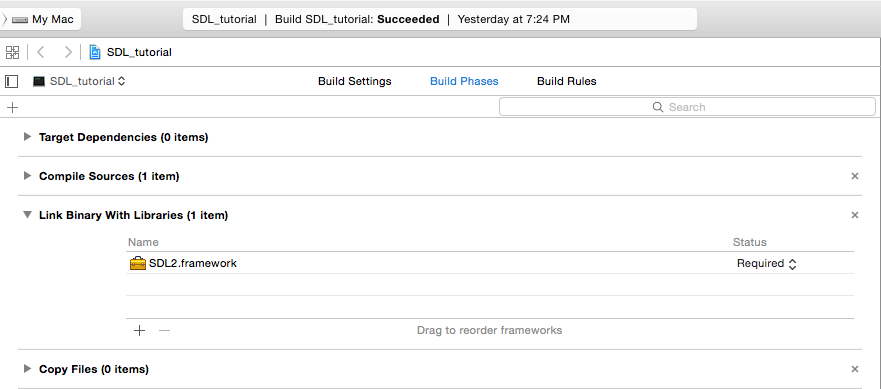
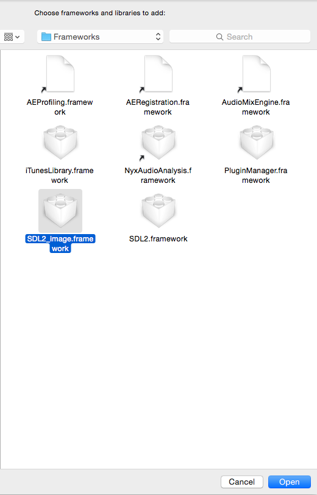

Setting up SDL Extension Libraries on XCode 6.1
Last Updated 1/12/15
5)
Open up your SDL project and go to the Link Binary with Libraries section and click the plus:
To add the SDL_image framework, click Add Other and go to /Library/Frameworks/ using command+shift+g to select the SDL_image framework and hit open.
7) Now go download the source for lesson 06. Add the source files inside to your project.
By default in the tutorials, the SDL headers are included like this:
For SDL_tff, we include the header like this:
For SDL_mixer, we include the header like this:
Now build. If there are any errors, make sure you didn't skip a step.

To add the SDL_image framework, click Add Other and go to /Library/Frameworks/ using command+shift+g to select the SDL_image framework and hit open.

7) Now go download the source for lesson 06. Add the source files inside to your project.
By default in the tutorials, the SDL headers are included like this:
#include <SDL/SDL_image.h>
SDL on Mac OS X does things differently, so we have to include the SDL_image header like this:#include <SDL2_image/SDL_image.h>
For SDL_tff, we include the header like this:
#include <SDL2_ttf/SDL_ttf.h>
For SDL_mixer, we include the header like this:
#include <SDL2_mixer/SDL_mixer.h>
Now build. If there are any errors, make sure you didn't skip a step.